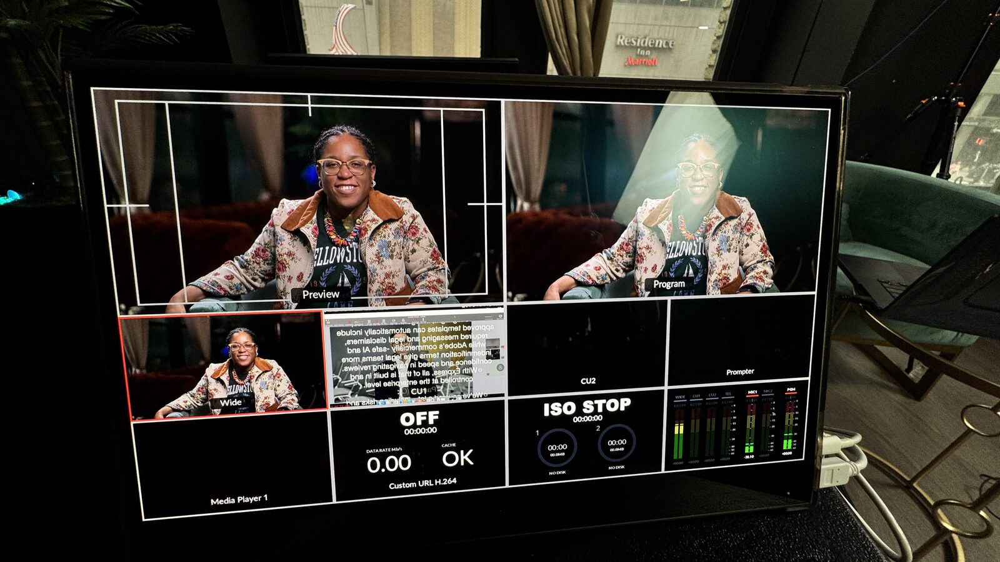

Corporate video, 4K live streams, and LED-wall virtual production that actually gets watched — and gets results. One New York team, from first frame to final cut.
When Chris Alvarez was in college, he believed the future would be filled with screens — phones, televisions, devices, and digital spaces that would all need stories created for them.
Today, we help organizations create content for a screen-driven world. From corporate videos and event films to virtual production, livestreams, podcasts, and AI-powered workflows, we build stories that move across platforms and connect with real audiences.
Our virtual production and LED-wall technology lets us create environments in real time, reduce limitations, shorten post-production, and give clients a clearer view of the story as it is being made.
The tools are evolving. The purpose stays the same: create video that feels meaningful, looks professional, and helps our clients reach their goals.
Every shoot has its own rhythm. Cameras move, clients need to see what's happening, and crews need setups that are reliable, flexible, and fast.
It's not about carrying the most gear — it's about bringing the right gear, and knowing how to make it work.
"The client feels much better when they see the shots."
We think about the small details — how the monitor is mounted, how the client sees the frame, how quickly we move, and how every setup supports the final result.

Watch — Client Monitoring on SetA successful live production requires more than cameras. It requires reliable audio, clean video switching, proper stage coverage, livestream support, recording, backup systems, crew communication, and a team that knows how to move through a live event without disrupting it. We have been livestreaming events since 2011 — the experience to handle the pressure, timing, and technical needs of any live ceremony.
From graduations to galas, Transcendent Enterprise brings the crew, equipment, audio support, video direction, and post-production services needed to produce a polished broadcast from start to finish.
Full-service tradition — cameras, lighting, story — sharpened by AI-enhanced workflows, LED-wall virtual production, and integrated AV. One connected team across every department.
Brand films, executive interviews, internal comms, and promos that people actually watch.
Multi-camera 4K broadcasts, hybrid events, and zero-failure livestreams since 2011.
Conferences, galas, and cultural events captured with cinematic multi-cam crews.
Real-time LED-wall environments that shorten post and expand what's possible on set.
Studio and on-location podcast capture, editing, and multi-platform content.
Lighting, audio support, and in-house equipment — ready to roll wherever your story goes.
Transcendent Enterprise supports organizations that need more than a one-time video crew. We work with high-end venues, cultural institutions, nonprofits, corporations, and event teams that need a trusted production partner across multiple departments, events, and campaigns.
Our multidisciplinary team can support premium event recaps, social media videos for every platform, livestreams, pitch videos, promos, lighting, AV support, interviews, and internal communications — all with one connected production workflow. For organizations with ongoing programming, this creates consistency: your brand looks unified, your events are captured with care, and your content is ready for the website, YouTube, LinkedIn, Instagram, email, and sponsor outreach.
Every organization now has to think like a media company. We help you build the content engine to do it well.
Transcendent Enterprise helps brands, agencies, and creative teams produce high-quality video content in New York City — even when key decision-makers are not on set.
Our team handles the production locally while your director, producer, client, or creative team joins remotely in real time. Whether you're in California, another state, or another country, you can watch the production, give direction, review the frame, and stay part of the creative process as it happens.
For Adobe, our New York crew delivered a studio-level production while collaborating in real time with stakeholders in San Francisco — ensuring creative alignment across coasts.
Get a slice of our latest episode. The 99¢ Pizza Podcast is an original series from Transcendent Enterprise — a space for real conversations about creativity, business, culture, New York City, entrepreneurship, and the stories that shape the people behind the work.
Like a classic New York slice, the conversations are honest, affordable in spirit, and full of flavor. Each episode gives viewers a taste of the ideas, people, and experiences that inspire how we create.
Tell us what you're planning. You'll get a custom production plan and a clear quote — free, within one business day.
Transcendent Enterprise brings the same care to every production — whether supporting a corporate client, filming a high-profile leader, capturing a major cultural event, or contributing to a documentary premiering at Tribeca.
Our role in Oscar de la Renta: A Life Well Lived reflects our ability to support elevated storytelling with professionalism, discretion, and cinematic attention to detail. Transcendent Enterprise contributed to the production of the film, with Chris Alvarez credited as Associate Producer and Emmanuel Acosta as Cinematographer — the strength of a New York team with the experience and creative sensitivity to support documentary work at a festival level.
Great work does not come from shortcuts. It comes from 20+ years of learning, failing, creating, rebuilding, and showing up when the work gets hard. For us, greatness has always meant more than making something look good — it means caring enough to get the story right, pushing past the obvious, and bringing purpose, trust, and craft into every production.
Our crew looks like New York. A diverse, MWBE-certified, minority-owned team — behind the camera and in front of it, on sets from Chelsea to wherever your story goes. Our services are just as diverse: full-service tradition — cameras, lighting, story — sharpened by AI-enhanced workflows, LED-wall virtual production, and integrated AV.
Each year we travel to 20+ cities, bringing consistent, brand-level quality — whether it's a corporate video, event recap, livestream, interview, podcast, or branded campaign.
Tell us what you're planning. We'll send back a custom production plan and a clear quote — free, within one business day.
Tell us what you're planning. We'll send back a custom production plan and a clear quote — free, within one business day. No obligation.